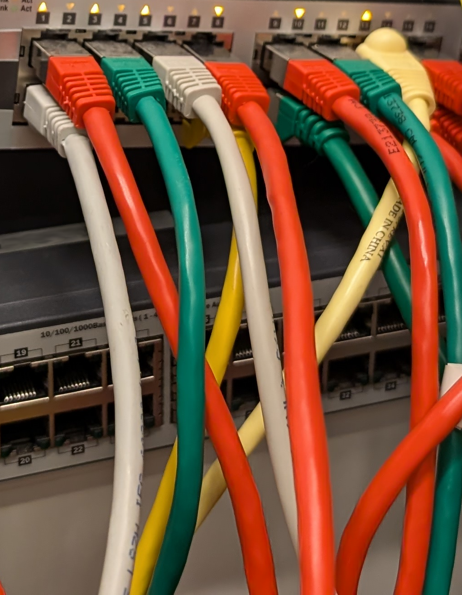

Alles, was du über Local Area Networks (LAN) wissen musst
Überall um uns herum finden wir heutzutage Netzwerke, die unser Leben prägen. Ob zu Hause, im Büro oder in Schulen – sie bilden das Rückgrat unserer digitalen Kommunikation. Ein besonders weit verbreitetes Netzwerk ist das Local Area Network, besser bekannt als LAN. Doch was verbirgt sich hinter diesem Begriff, und warum ist es so wichtig für unsere tägliche Arbeit? In diesem Artikel klären wir das!
Was ist ein Local Area Network (LAN)?
Ein Local Area Network (LAN) ist ein Netzwerk, das eine begrenzte räumliche Ausdehnung hat. Häufig umfasst es ein einzelnes Gebäude oder mehrere nahegelegene Gebäude, wie z. B. Büros, Schulen oder Privathaushalte. Die Hauptaufgabe eines LANs ist es, Computer und andere Geräte miteinander zu verbinden, sodass sie Daten und Ressourcen wie Drucker oder Internetverbindungen gemeinsam nutzen können.
Die Funktionsweise eines LANs
Ein LAN funktioniert über spezielle Hardwarekomponenten wie Switches, Router und Netzwerkkabel. Die Kommunikation zwischen den angeschlossenen Geräten erfolgt oft über Ethernet, eine weit verbreitete Technologie, die die Datenübertragung in einem lokalen Netzwerk ermöglicht.
In einem typischen LAN sind die Geräte direkt miteinander verbunden, entweder über Kabel (kabelgebundenes LAN) oder drahtlos (WLAN). Die kabelgebundene Variante bietet oft höhere Geschwindigkeit und Stabilität, während WLAN flexibler ist, da sich die Nutzer frei bewegen können, solange sie sich im Empfangsbereich des Netzwerks befinden.
Die Vorteile eines LANs
Geschwindigkeit und Zuverlässigkeit sind große Stärken eines LANs. Da die Entfernung zwischen den Geräten in einem LAN relativ gering ist, sind die Übertragungsgeschwindigkeiten oft höher im Vergleich zu Weitverkehrsnetzwerken (WAN). Moderne LANs können Datenübertragungsraten von bis zu 10 Gbit/s erreichen, was besonders für datenintensive Anwendungen wie Video-Streaming oder große Dateiübertragungen nützlich ist.
Ein weiterer Vorteil ist die Kosteneffizienz. Die Installation und Wartung eines LANs ist im Vergleich zu größeren Netzwerken relativ kostengünstig, da weniger komplexe Infrastruktur erforderlich ist. Besonders für kleinere Unternehmen oder Schulen bietet sich ein LAN daher als praktische Lösung an.
Auch in puncto Sicherheit bietet ein LAN Vorteile. Da es auf ein bestimmtes geografisches Gebiet begrenzt ist, kann es leichter überwacht und geschützt werden. Administratoren können den Zugang zu den Netzwerken gezielt steuern und absichern.
Einsatzgebiete von LANs
LANs sind überall dort zu finden, wo viele Geräte miteinander verbunden werden müssen. In Büros nutzen Mitarbeiter häufig gemeinsame Ressourcen wie Drucker, Server und Internetverbindungen. In Schulen greifen Schüler und Lehrer auf gemeinsame Datenbanken, Lernplattformen und Drucker zu. In Privathaushalten sind oft Fernseher, Smartphones, Laptops und Smart-Home-Geräte über ein Heimnetzwerk verbunden.
Unterschiede zu anderen Netzwerken
Während das LAN lokal begrenzt ist, gibt es andere Netzwerktypen, die größere Entfernungen überbrücken. Ein Wide Area Network (WAN) verbindet Netzwerke über große geografische Entfernungen, oft auch international. Ein bekanntes Beispiel ist das Internet. Metropolitan Area Networks (MANs) hingegen decken größere Stadtgebiete ab und verbinden LANs miteinander.
Herausforderungen und Entwicklungen
Mit der Zunahme drahtloser Technologien wie WLAN und 5G stehen LANs vor neuen Herausforderungen. Drahtlose Verbindungen bieten zwar Flexibilität, sind aber manchmal anfälliger für Störungen oder Sicherheitsprobleme. Dennoch bleiben kabelgebundene LANs in vielen Bereichen die bevorzugte Lösung, insbesondere dort, wo Geschwindigkeit und Stabilität entscheidend sind.